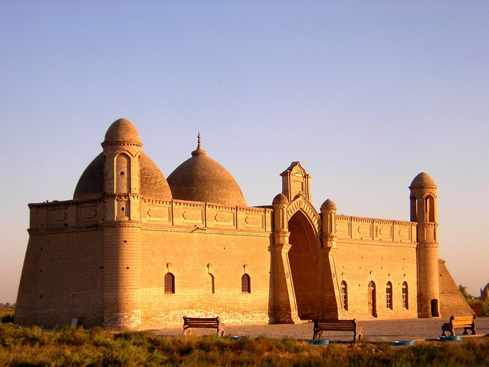
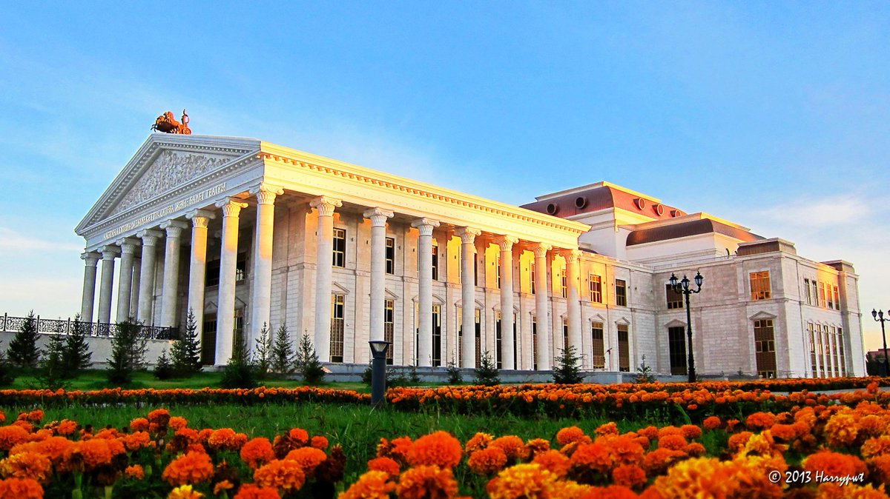
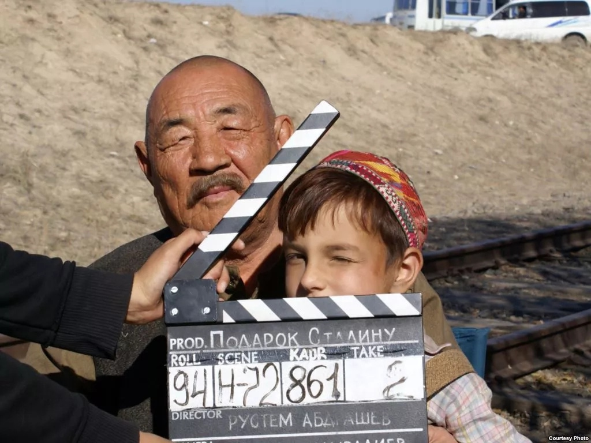
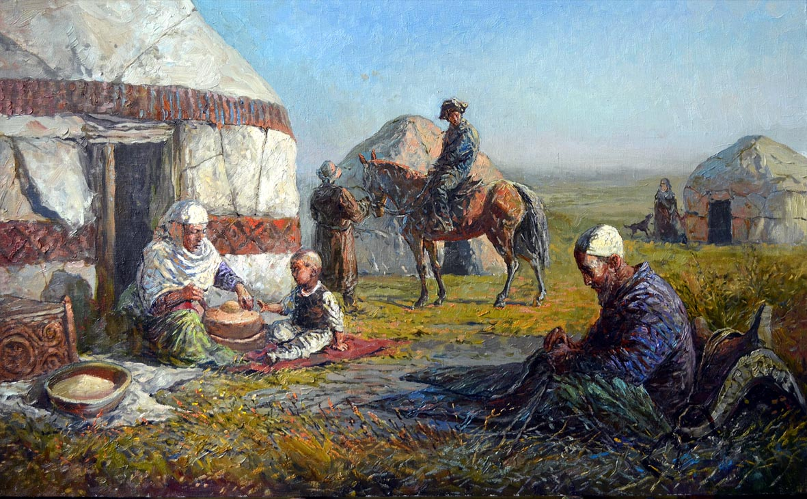
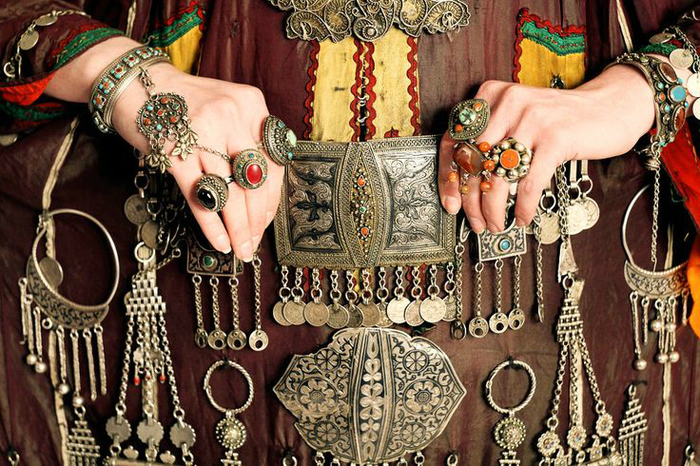

Архитектура
Архитектура- источник богатейшей информации о культуре, современном развитии и прошлом любого государства. Казахстан был родиной для многих племен и народов на протяжении многих веков. Казахская земля хранит в себе богатое архитектурное наследие. Страна издавна являлся мостом между Востоком и Западом. Особенность казахской архитектуры состоит в том, что здесь тесно переплетается что-то новое, но не отказываются и от старого. Смотря на архитектуру Казахстана видно, что на ее развитие оказали древние школы зодчества. На территории республики расположено множество архитектурных памятников. Стоит обязательно посетить Отрар, развалины города хранят следы завоевания великого Чингисхана.
Одними из самых красивых памятников архитектуры являются культовые здания. Среди них выделяются мавзолеи и мазары. Самыми известными являются мавзолей Бабаджи-хатун и Айша-биби, мавзолеи Жошы-хана и Алаша-хана, мавзолей Кара-хана в Таразе. Они восхищают посетителей прекрасной архитектурной композицией и разнообразными убранствами.
Мавзолей Бабаджи-хатун находится в 18 км. от города Тараз. Он поражает своей простотой, но в то же время величием. Это здание в виде куба, обвенчанное почти разрушенным куполом. Жемчужиной архитектурного искусства можно назвать мавзолей Айша-биби. В нем можно наблюдать удивительную гармонию разных архитектурных стилей. Некоторые называют этот мавзолей живым музеем, где находится ключ к пониманию традиционной архитектуры народа. Мавзолей кубической формы, по краям возвышаются колонны. Оформленные стены радуют глаз своим разнообразием орнаментов.
В Центральном Казахстане расположен еще один шедевр архитектуры — мавзолей Алаша-хана. Сооружение имеет строгие пропорции и сдержанный декор. Расположен на возвышенности, что придает мавзолею величественность. В Семипалатинской области на реке Аягуз расположен мазар Козы-Корпеш-Баян-Сулу, памятник X-XI века. Высота- 11,65 метров. Памятник служит символом бессмертной любви лирических героев. Город Туркестан славится памятником конца XIV- начала XV-мавзолей Ходжа Ахмеда Йасауи, возведенный по приказу эмира Тимура. Комплекс находится в самом центре города. Высота сооружения-37.5 метров. В нем находится 35 маленьких и больших помещений. Изумительно красиво мавзолей украшен снаружи. Мавзолей облицован поливными кирпичами и цветной керамикой.
Ярким образцом зодчества служит мавзолей Кок-Кесене. Расположен вблизи города Сыгнак. Снаружи он облицован белыми и синими кирпичами. На сегодняшний день памятник почти разрушен. В XIX веке в Южном Казахстане появился новые типы сооружений. Это мавзолей Рустамбека в селе Тасты и Сагындыка. Представляет собой необычный пятиугольный тип постройки. Особое место в архитектуре этого периода занимает комплекс мечети-медресе, построенный в Жаркенте. Основное здание окружено красивым парком. Весь комплекс украшен декоративными резными плитами. В Алматы расположен Кызыл-Тан- здание бывшего Верненского торгового дома. Здание имеет прямоугольную симметричную форму. Сооружение украшено фигурными столбами и резными карнизами. Новое архитектурное сооружение- мавзолей Абая.Находится в урочище Жидебай в Восточно-Казахстанской области. Памятник построен на горе.Имеет башнеобразную форму. Многогранный купол отражает вековые традиции строительства. С обретением независимости архитектура оказалась на новом уровне развития. Перенос столицы привлек зодчих со всего мира. Автором всем известного символа Астаны является Акмурза Рустембеков, за который он был удостоен множествам наград.
Музыка

Символика мира в казахской музыке ориентирует на ценности традиционного мировосприятия, прежде всего на созерцание как способ отношения к миру и с миром. Созерцание как исконная культурная традиция казахского этноса предполагает многоуровневое содержание. Это и способ освоения природы, и восприятие красоты Вселенной, ее бесконечности, и осознание движения. Идеалом представляется неотъединенность культуры от жизненного мира человека. Всеобъемлющей идеей национального самосознания традиционного толка является идея общения, воспринимаемого как творческое начало. И самое главное: деяния человека должны вдохновлять его, в стремлении к этому заложено неодолимое влечение человека уйти от хаоса к гармонии, от тени к свету. Целостность восприятия мира, присущая мироощущению кочевника, явственно прослеживается в айтысе - песенном состязании акынов. Айтыс строится на процессах художественно-эстетического сопереживания акына и слушателей. Эстетическая способность сопереживания в айтысе порождается не только музыкальным сопровождением, но и поэтической импровизацией, силой поэтического слова, культура которого была очень высока в степи. В айтысе зафиксирован сам характер творчества как процесса. «Воображение, фантазия создают такое поэтическое бытие действительности, когда внутренняя свобода человека в неразрывной связи со свободой самого айтыса создают целостную картину мира со своеобразным экскурсом в прошлое, связи прошлого и будущего через момент настоящего. В условиях устной культуры художественно-поэтический дар был одной из возможностей становления человека».
Театр
На сегодняшний день в Казахстане функционирует 50 театров, в том числе 9 подведомственных Министерству культуры Республики Казахстан: 2 театра оперы и балета, 2 драматических театра, 2 театра для детей и юношества и 3 национальных театра. Ежегодно репертуар театров пополняется новыми произведениями, прежде всего отечественных авторов - ставится около 30 новых постановок.
За последние три года - с 2008 по 2011гг. - с аншлагом прошли премьеры опер А.Жубанова, Л.Хамиди «Абай» в постановке Народного артиста Е.Обаева, Джузеппе Верди «Аида», бессмертного шедевра Джакомо Пуччини – оперы «Богема», итальянского композитора Гаэтано Доницетти, режиссера-постановщика, лауреата независимой премии «Тарлан» Ляйлим Имангазиной «Любовный напиток», балета Адольфа Адана «Корсар» в новой редакции народного артиста СССР, лауреата Ленинской и Государственной премий, Героя Социалистического труда, кавалера ордена «Достық», выдающегося балетмейстера Юрия Григоровича.
Телевизионные версии премьерных показов, как и концертных мероприятий, посвященных государственным и национальным праздникам, транслируются в эфире ведущих каналов страны. Ежегодно республиканские театры проводят гастрольные поездки по Казахстану, ближнему и дальнему зарубежью. Германия, Италия, Венгрия, Кувейт, Саудовская Аравия, Иордания, Корея – это лишь часть стран, которые с гастролями посетили кзахстанские театры.
Для поддержки творчества отечественных композиторов и драматургов, пополнения репертуара драматических и оперных театров республики новыми произведениями казахстанских авторов проводятся различные конкурсы, в их числе: национальный конкурс «Тәуелсіздік толғауы» («Песнь Независимости»), Республиканский конкурс исполнителей традиционной песни им. А.Кашаубаева, Международный конкурс артистов балета. Проводятся фестивали: Республиканский фестиваль театров Казахстана, посвященный 175-летию Биржан сала Кожагулулы, Международный фестиваль культуры государств – членов ШОС.
Кино
Важным направлением государственной политики в сфере культуры является сохранение и развитие национальной кинематографии Казахстана. История становления отечественной киностудии насчитывает почти 90-летнюю историю, первый документальный фильм о Казахстане был снят в 1925 г. В 1928 г. в Москве при Совнаркоме РСФР создается Всероссийский трест — Акционерное общество «Восток», которое было призвано производить кинолетопись стран Востока. А уже в 1929 г. в Казахстане, на базе треста «Востоккино» режиссер В. Турин снял фильм «Турксиб» («Стальной путь»). Эта картина вошла в список лучших фильмов, оказавших огромное влияние на весь дальнейший ход мирового кинематографа.
Спустя пять лет, в 1934 г., организована Алма-Атинская студия кинохроники, где начали выпускаться документальные фильмы.
Позже, в 1941 г., организована Алма-Атинская киностудия художественных фильмов. В этом же году Алма-Атинская киностудия слилась с эвакуированными в Казахстан киностудиями «Мосфильм» и «Ленфильм» — в Центральную Объединенную Киностудию — ЦОКС, которая работала в Алма-Ате до 1944 г. и выпускала в годы войны 80% всех отечественных художественных фильмов. Современное название киностудия получила 9 января 1960 г.: приказом Министерства культуры Казахской ССР Алма-Атинская киностудия художественных и хроникальных фильмов переименована в киностудию «Казахфильм». В 1984 г. киностудии «Казахфильм» присвоено имя выдающегося деятеля национальной кинематографии Шакена Кенжетаевича Айманова (Киностудия «Казахфильм» им. Ш.Айманова).
Каждый год АО «Казахфильм» им. Ш. Айманова выпускает десятки художественных, документальных и анимационных фильмов. В период с 2009 по 2011 гг. фильмы АО «Казахфильм» им.Ш. Айманова приняли участие в 14 международных кинофестивалях, в программах 35 фестивалей разных категорий. На фестивалях отобраны и показаны казахстанские фильмы, такие как «Әкем екеуіміз» Д. Саламата, «Бақсы» Г. Омаровой, «Подарок Сталину» Р. Абдрашева, «Келін» Е. Турсунова, «Прощай, Гульсары» А. Амиркулова, «Прыжок Афалины» Э. Уразбаева, «Мұстафа Шоқай» С. Нарымбетов и др. На сегодняшний день полностью завершено переоснащение современного аппаратного цифрового комплекса: введены в эксплуатацию студии речевого озвучивания и цветокоррекции фильмов, современные видеомонтажные, аппаратная компьютерной графики, студия перезаписи фонограмм в системе DOLBY, студия шумового озвучивания фильмов.
Живопись
Значительную роль в зарождении классического искусства живописи в Казахстане сыграли русские художники прогрессивного направления. Жизнь и быт казахского народа XIX в. нашли отражение в рисунках и акварелях Ч. Валиханова, сосланного в Казахстан Т. Шевченко.
Тема Казахстана и Средней Азии была одной из главных в творчестве известного русского живописца В. Верещагина. Его картина “Окружающие Лепсинский край горы” с удивительной точностью передает красоту казахского края.
К казахской теме также обращались и побывавшие в Казахстане в составе различных экспедиций Б. Смирнов, О. Федченко, П. Кошаров. Знаменитый художник Н. Хлудов все свои значительные произведения создал на казахскую тематику. В таких его работах, как "Прогон скота", "За дровами" с большой любовью изображена казахская степь. В советское время, уже в конце 20-х и в 30-е гг., в содружестве с русскими художниками Н. Хлудовым, Н. Крутильниковым и др. работали и первые национальные живописцы и графики, проявлявшие живой интерес к новым явлениям советской действительности, а также к историко-революционному прошлому казахского народа. Среди этих мастеров кисти – А. Кастеев, X. и К. Ходжиковы, А. Исмаилов и пр. Для их творчества того периода характерны попытки освоить станковые формы, выработать национальный художественный язык. В середине 40-х и в первой половине 50-х гг. выросло профессиональное мастерство художников, дальнейшее распространение получила сюжетная картина (А. Исмаилов, А. Кастеев и др.), а также портрет и пейзаж (А. Черкасский, М. Лизогуб, Л. Леонтьев и др.). "Кокпар", художник К. ТельжановСо второй половины 50-х гг. значительную роль в развитии казахского искусства стали играть молодые живописцы, получившие образование в художественных институтах Москвы и Ленинграда. В 60-х - начале 80-х гг. для их творчества характерно стремление к передаче эмоционального состояния человека, его внутренней связи с окружающим миром, порой воплощающееся в обобщенно-символических образах. Эта тенденция повлекла за собой поиски новых выразительных средств. Среди живописцев этого периода выделяются К. Тельжанов, М. Кенбаев, А. Степанов, С. Мамбеев, Н.-Б. Нурмухаммедов, К. Шаяхметов, Ж. Шарденов, У. Ажиев, А. Джусупов, С. Айтбаев и др. В графике работают Н. Гаев, Р. Сахи, X. Абаев, А. Дячкин, Е. Сидоркин, М. Кисамединов и др., в станковой и монументальной скульптуре – X. Наурзбаев, Б. Тулеков, Е. Мергенов, Е. Сергебаев, Т. Досмагамбетов и др. В развитии театрально-декорационного искусства значительная роль принадлежит В. Теляковскому, А. Ненашеву, А. Галимбаевой, Г. Исмаиловой.
На территории Казахстана издревле изготовляли стекло, посуду из глины, дерева и кожи, а также мелкую пластику из камня, кости, керамики, металла; получили распространение резьба по дереву, кости, камню, обработка и тиснение по коже, чеканка, плетение циновок. Развивалось художественное литье из олова и бронзы. Создавалось множество видов оружия: боевые топорики, секиры – ай-балта, луки – садаки, колчаны – корамсаки. Казахские мастера и ремесленники создавали удивительные изделия, славившиеся у соседей.
Орнаментальное мастерство проявилось в кузнечном деле. Бытовало также художественное плетение из чия (соломы). С древнейших времен в Казахстане известна вышивка – разноцветными нитями, бисером, стеклярусом, жемчугом, в качестве материалов выступали ткани, кожа, войлок и другие. Наиболее популярны четыре вида вышивки: тамбурный шов – быз кесте, гладь – баста, двухрядовая – албыр кесте, канва – кенебе. Из них чаще всего встречается тамбурный шов, для вышивания которым мастерицы пользуются крючком или специальной иглой.
Декоративно-прикладное творчество

К традиционным видам декоративно-прикладного искусства Казахстана относится и художественная резьба, которой декорируют предметыбыта (посуду мебель), и архитектурные сооружения. Распространена резьба по дереву, камню и кости. Часто резьбу сочетают с цветным тонированием, раскраской, инкрустацией костью и металлом. Резная кость применяется в сочетании с резьбой по дереву.
Исконным ремеслом казахов является ковроткачество. Со стародавних времен и по настоящее время стены домов часто украшают традиционными коврами ручной работы, которые называются "сырмак". Про них говорят: скромен ковер по цвету, но узор его точен; прост на вид, а сделать его нелегко. Надо заблаговременно накосить в степи чий, заготовить баранью шерсть, хорошо постирать ее и покрасить каждую кипу шерсти в свой цвет. Затем разложить шерсть на циновке из чия и обдать горячей водой.
А дальше – самый ответственный момент. Все, кто есть в доме: дети, взрослые, старики, – мнут ногами завернутый в чий будущий ковер, чтобы шерсть накрепко свалялась. Затем чий разворачивают, из каждого цвета свяленной шерсти вырезают нужный узор и на отдельной соломенной подстилке составляют аппликации. Снова заворачивают, мнут до тех пор, пока кусочки будущего ковра плотно не пристанут друг к другу. По традиции, когда сырмак развернут в последний раз, мама поручает самой младшей дочке нитками пришить элементы узора друг к другу. Затем весь орнамент обшивают тесьмой, выдавливают дополнительный узор – и сырмак готов.